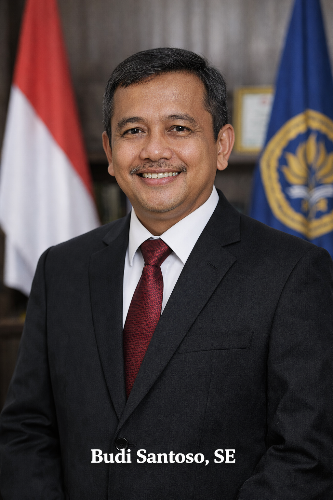
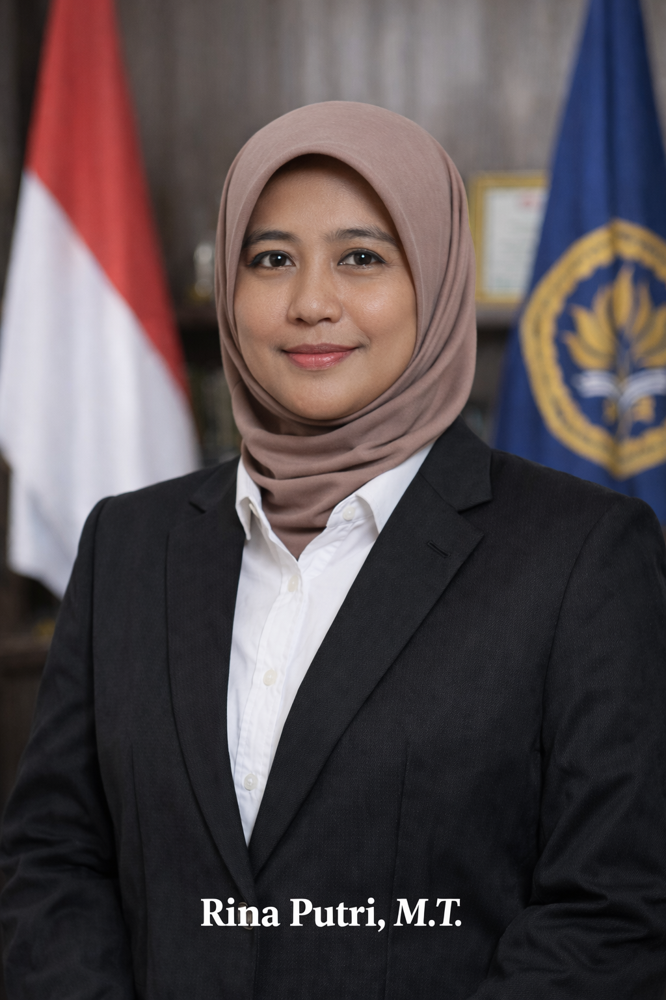

Struktur Organisasi

Dr. Ahmad Wijaya
Rektor

Siti Rahma, M.Kom
Wakil Rektor

Budi Santoso, SE
Dekan

Rina Putri, M.T
Kepala Program Studi
Kampus unggulan dengan pendidikan berkualitas
Alumni
Dosen
Program Studi
Prestasi
Kampus Merakyat adalah tempat belajar yang terbuka untuk semua kalangan. Kampus ini hadir dengan semangat kebersamaan, memberikan kesempatan yang sama bagi setiap mahasiswa untuk meraih pendidikan berkualitas tanpa memandang latar belakang. Dengan biaya yang terjangkau, fasilitas yang memadai, serta dosen yang ramah dan profesional, Kampus Merakyat menjadi ruang tumbuh bagi generasi muda untuk berkembang, berinovasi, dan berkontribusi nyata bagi masyarakat. Di Kampus Merakyat, pendidikan bukan hanya tentang teori di kelas, tetapi juga tentang nilai kejujuran, kerja keras, dan kepedulian sosial. Kampus ini berkomitmen mencetak lulusan yang tidak hanya cerdas secara akademik, tetapi juga memiliki karakter kuat dan siap menghadapi tantangan dunia nyata.
Kampus Merakyat didirikan pada tahun 2005 sebagai bentuk komitmen dalam menyediakan pendidikan tinggi yang berkualitas dan terjangkau bagi seluruh lapisan masyarakat. Seiring dengan perkembangan zaman, Kampus Merakyat terus berinovasi dalam bidang akademik, teknologi, dan pengabdian kepada masyarakat. Berbagai program studi unggulan dibuka untuk menjawab kebutuhan dunia kerja dan industri. Hingga saat ini, Kampus Merakyat telah meluluskan ribuan alumni yang berkontribusi aktif di berbagai sektor, baik nasional maupun internasional.
Menjunjung tinggi kejujuran, etika, dan tanggung jawab dalam seluruh aktivitas akademik dan non-akademik.
Mendorong kreativitas dan pembaruan dalam pembelajaran, penelitian, serta pengembangan teknologi.
Mengutamakan kerja sama antara civitas akademika dan mitra strategis untuk mencapai tujuan bersama.
Menanamkan sikap disiplin, kompeten, dan berorientasi pada kualitas dalam setiap peran dan tugas.
Rektor
Wakil Rektor
Dekan
Kepala Program Studi

Laboratorium modern dengan perangkat lengkap untuk mendukung praktikum dan penelitian mahasiswa.

Menyediakan ribuan koleksi buku, jurnal, dan akses digital untuk menunjang kegiatan akademik.

Ruang kelas ber-AC, proyektor, dan suasana belajar yang kondusif.
Digunakan untuk seminar, wisuda, dan kegiatan kemahasiswaan.
Menjadi perguruan tinggi unggulan dalam pengembangan ilmu pengetahuan, teknologi, dan karakter bangsa yang berdaya saing global.
Teknik Informatika adalah jurusan yang mempelajari bagaimana teknologi dan komputer bekerja secara mendalam. Mahasiswa Teknik Informatika belajar membuat program atau aplikasi dengan berbagai bahasa pemrograman, memahami logika dan algoritma, mengelola basis data, membangun website dan aplikasi mobile, serta mempelajari jaringan komputer dan keamanan sistem. Selain itu, ada juga pembahasan tentang kecerdasan buatan dan pengolahan data. Jurusan ini cocok buat orang yang suka logika, problem solving, dan dunia teknologi..
Sistem Informasi mempelajari teknologi komputer tetapi dikombinasikan dengan kebutuhan bisnis dan organisasi. Di jurusan ini, mahasiswa belajar bagaimana merancang dan mengelola sistem informasi yang digunakan di perusahaan, seperti sistem keuangan, sistem akademik, atau sistem penjualan. Selain dasar pemrograman dan basis data, mahasiswa juga mempelajari analisis kebutuhan sistem, manajemen proyek, serta bagaimana teknologi membantu pengambilan keputusan dalam bisnis. Jurusan ini cocok buat yang tertarik pada IT namun juga ingin paham proses bisnis.
Manajemen adalah jurusan yang berfokus pada cara mengelola organisasi dan bisnis agar berjalan dengan baik. Mahasiswa Manajemen mempelajari bagaimana mengatur sumber daya manusia, mengelola keuangan perusahaan, menyusun strategi pemasaran, serta mengambil keputusan yang tepat. Selain itu, ada juga pembelajaran tentang kepemimpinan, kewirausahaan, dan etika bisnis. Jurusan ini cocok bagi mereka yang tertarik pada dunia bisnis, organisasi, dan kepemimpinan.
Akuntansi merupakan jurusan yang mempelajari pencatatan dan pengelolaan keuangan secara sistematis. Mahasiswa Akuntansi belajar bagaimana mencatat transaksi keuangan, menyusun laporan keuangan, melakukan analisis keuangan, memahami perpajakan, serta melakukan audit. Ketelitian dan kemampuan menganalisis angka sangat dibutuhkan di jurusan ini karena berkaitan langsung dengan kondisi keuangan suatu perusahaan atau organisasi.
| Kegiatan | Tanggal |
|---|---|
| Awal Semester | Februari 2026 |
| UTS | April 2026 |
| UAS | Juni 2026 |
| pengumuman kelulusan | Oktober 2026 |
Pendaftaran mahasiswa baru telah dibuka untuk tahun akademik 2026.
10 Januari 2026Wisuda mahasiswa akan dilaksanakan secara luring di aula utama kampus.
5 Februari 2026Kegiatan akademik diliburkan dalam rangka hari besar nasional.
1 Maret 2026


Calon mahasiswa dapat melakukan pendaftaran melalui form pendaftaran online yang tersedia di website Kampus Merakyat.
Ya, Kampus Merakyat menyediakan berbagai program beasiswa bagi mahasiswa berprestasi dan kurang mampu.
Kampus Merakyat menyediakan kelas reguler dan kelas karyawan dengan jadwal yang fleksibel.
Sistem perkuliahan dilakukan secara tatap muka dan didukung dengan pembelajaran berbasis digital.